| Inversión agropecuaria por década, 1990–2024 | |||
|---|---|---|---|
| Década | Inversión agrop. promedio (USD MM) | % inversión pública total | % PIB |
| 1990s | 36 | 7.3 | NaN |
| 2000s | 64 | 8.2 | 0.60 |
| 2010s | 220 | 5.9 | 0.64 |
| 2020-2024 | 202 | 8.3 | 0.38 |
| Fuente: VIPFE / MEFP Informe Fiscal 2024. | |||
Gasto público agropecuario
Magnitud, composición, ejecución y sustitución por crédito
Bolivia destinó al sector agropecuario, en promedio, menos del 3 % de su gasto público total durante todo el período 1990–2017. El país nunca alcanzó la meta de Maputo del 10 %. Desde 2014, el crédito subsidiado del sistema bancario ha sustituido parcialmente la inversión pública directa.
El acertijo central — gasto creciente, productividad estancada
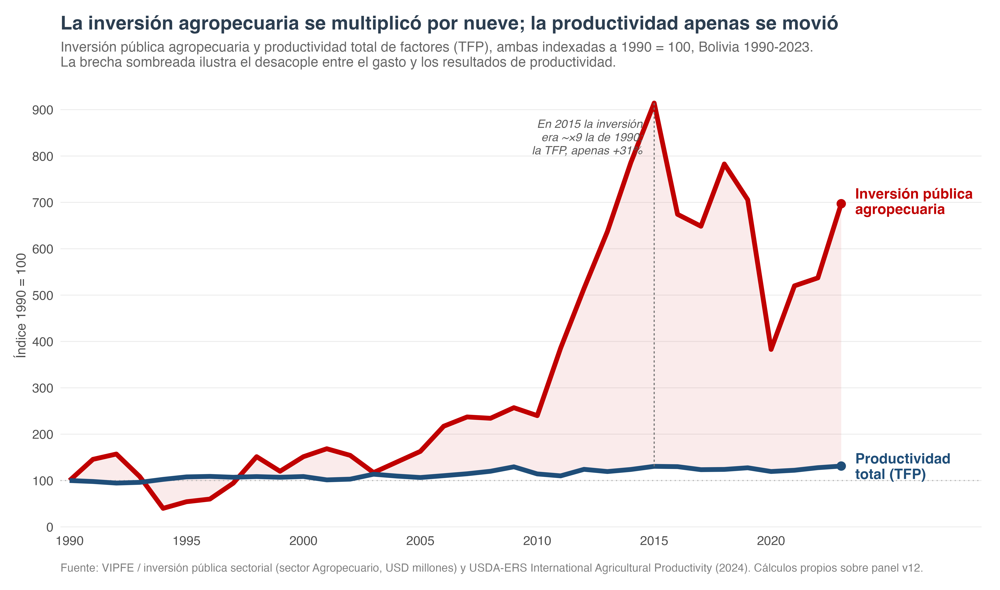
La pregunta que define este capítulo es simple: si la inversión pública agropecuaria se multiplicó por diez entre 2000 y 2015, ¿por qué la productividad creció apenas 30 %? Las secciones siguientes documentan los niveles, composiciones, instrumentos y patrones territoriales del gasto que ayudan a entender este desacople.
Antecedente — gasto en el período APER 2011 (1996-2008)
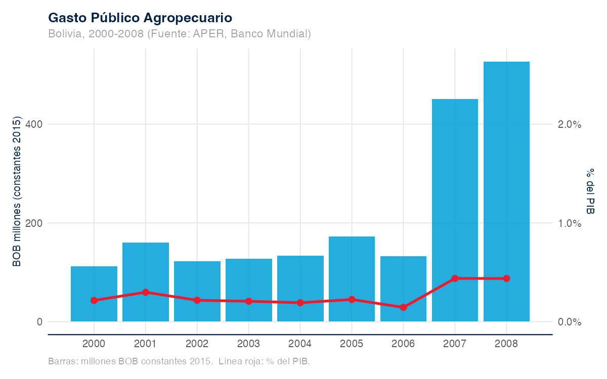
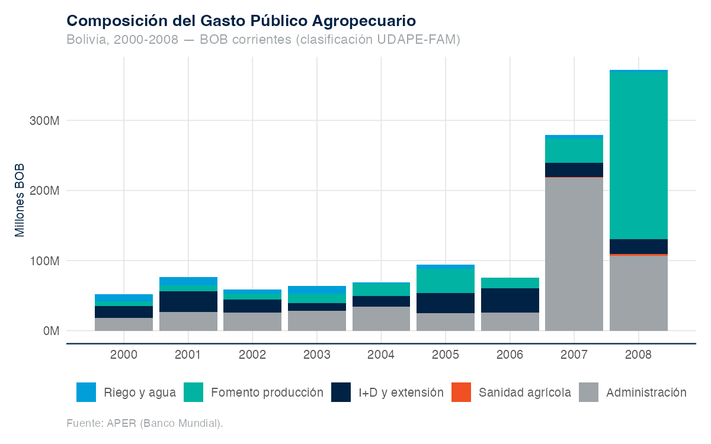
El reporte original cubrió el período de mayor cobertura microdatado (BOOST 1996-2008). El presente estudio mantiene esa base como ancla histórica y la conecta con datos posteriores de VIPFE, Jubileo y MEFP-DGAA.
Magnitud histórica de la inversión
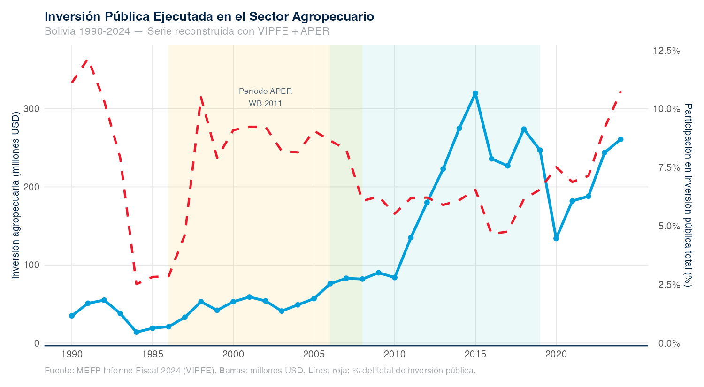
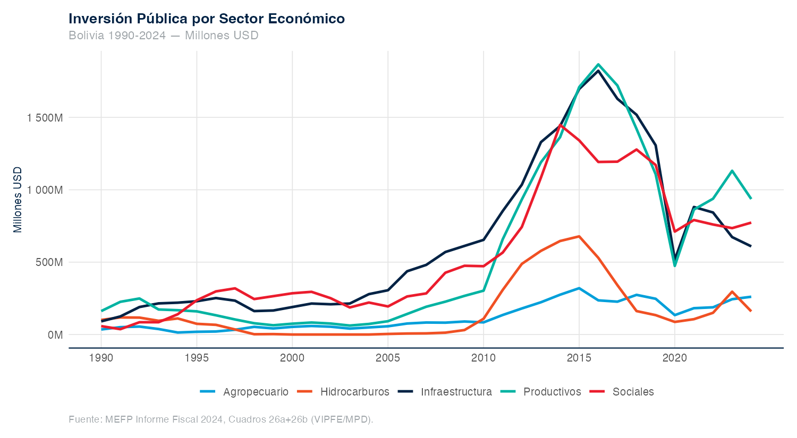
La trayectoria muestra cuatro fases:
- 1990s: nivel bajo (~USD 50 M anuales), contexto neoliberal post-ajuste.
- 2000s: ascenso a ~USD 130 M, asociado al boom de commodities y al cambio político de 2006.
- 2010s: pico de USD 320 M en 2015, financiado por el ciclo de hidrocarburos.
- 2020–2024: caída a USD 130–260 M, con crisis fiscal, COVID y escasez de divisas.
Benchmark internacional — la meta de Maputo
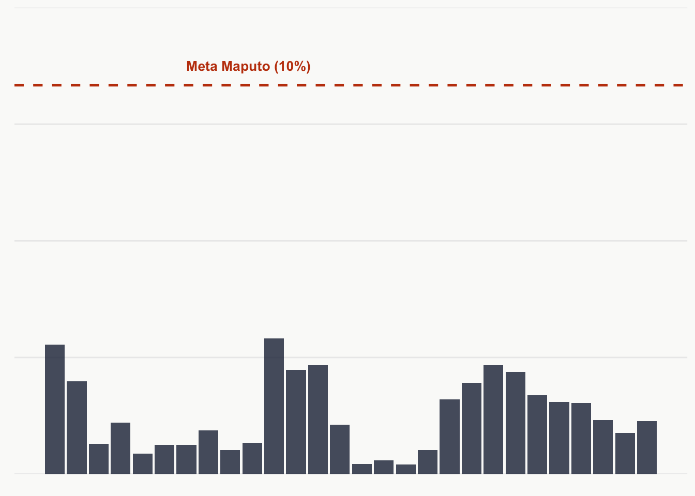
Bolivia nunca alcanzó la meta de Maputo
Máximo histórico: 3,48 % del gasto público total en 1990. Promedio 2000–2007: 1,87 % (promedio 1990–2007: 1,72 %). En el ranking LAC 2000–2017, Bolivia ocupa la posición 9 de 24 con 0,43 % del PIB — por encima de Argentina (0,08 %), Chile (0,31 %) y Perú (0,21 %).
Composición del gasto: período BOOST 1996–2008
| Ejecución y composición — BOOST 1996-2008 | |||||
|---|---|---|---|---|---|
| Año | Presup. ejecutado (BOB MM) | Tasa ejecución (%) | Gasto corriente (BOB MM) | Gasto capital (BOB MM) | % capital |
| 1996 | 278 | 74,3 | 84 | 193 | 69,7 |
| 2000 | 367 | 86,7 | 85 | 282 | 76,8 |
| 2004 | 638 | 117,3 | 392 | 246 | 38,5 |
| 2008 | 1282 | 100,8 | 605 | 678 | 52,8 |
| Fuente: World Bank BOOST Bolivia (panel maestro v12). | |||||
Durante el período BOOST (único con microdato institucional completo), el gasto agropecuario ejecutado pasó de 278 MM BOB (1996) a 1 282 MM BOB (2008) — multiplicación ×4,6 en términos nominales. La tasa de ejecución mejoró de 74 % a 101 %, evidenciando fortalecimiento institucional.
Composición por destinatario — metodología MAFAP-FAO
Más allá de cuánto se gasta, importa a quién beneficia el gasto. La metodología MAFAP-FAO clasifica el gasto agropecuario según su destinatario: A apoyo a productores (transferencias atadas a producto), B apoyo a consumidores, C apoyo a intermediarios, D bienes públicos al sector (I+D, sanidad, extensión, riego) y E soporte rural general. La descomposición se construye desde la descomposición programática del MEFP (Presupuesto Abierto, acteco-treemap, 36 actividades, devengado 2016–2024).
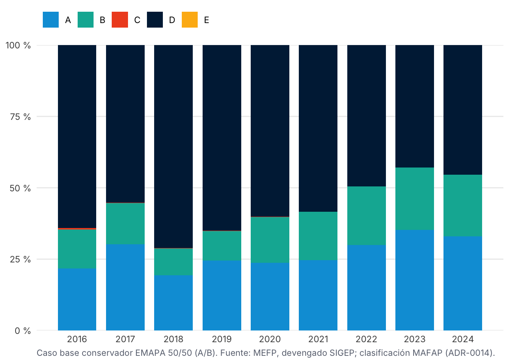
Bienes públicos mayoritarios, pero en retroceso (hallazgo de composición)
Acumulado 2016–2024, el 56 % del gasto agropecuario se destina a bienes públicos (categoría D): infraestructura de riego 27 %, investigación (INIAF), sanidad y extensión. El resto se reparte entre apoyo a productores (A, 27 %) y a consumidores (B, 16 %); las categorías C y E son casi nulas.
La dinámica es la señal de alerta: la participación de los bienes públicos cayó de 64 % (2016) a 45 % (2024), mientras el apoyo a productores y consumidores (A+B) subió de 35 % a 55 %, con el cruce en 2022. El mecanismo de EMAPA —compras y comercialización— pasó del 25 % al 42 % del gasto, casi exactamente lo que perdieron los bienes públicos: una sustitución de categorías, no una expansión del gasto total. El reparto A/B de EMAPA se trata como caso base conservador 50/50 (supuesto, no observado).
Tasa de ejecución reciente — benchmark MEFP
| Tasas de ejecución MEFP (Entidad 035), 2015-2023 | |||
|---|---|---|---|
| Año | Vigente (BOB MM) | Ejecutado (BOB MM) | % Ejecución |
| 2015 | 424 | 359 | 84.8 |
| 2016 | 374 | 289 | 77.4 |
| 2017 | 468 | 256 | 54.6 |
| 2018 | 499 | 390 | 78.1 |
| 2019 | 426 | 268 | 62.9 |
| 2020 | 5540 | 2341 | 42.3 |
| 2021 | 4277 | 3281 | 76.7 |
| 2022 | 1354 | 1255 | 92.7 |
| 2023 | 2121 | 2041 | 96.2 |
| Fuente: PDFs DGAA MEFP. Solo Entidad 035 (referencia comparativa). | |||
Lectura del benchmark
- Rango histórico de ejecución MEFP: 42 % (2020) – 96 % (2023).
- En 2020 el presupuesto vigente explotó ×13 por transferencias COVID; ejecución cayó al 42 %.
- 2022–2023: recuperación a 93–96 % tras normalización.
- Servicios No Personales es consistentemente el grupo con menor ejecución (46–79 %).
Los datos por entidad de los ministerios sectoriales (MDRyT, INIAF, SENASAG) no están públicamente disponibles para 2009–2024 con el detalle requerido. La carta formal al MEFP (DS 28168) gestiona esta solicitud.
El cambio estructural: crédito subsidiado vs. inversión pública
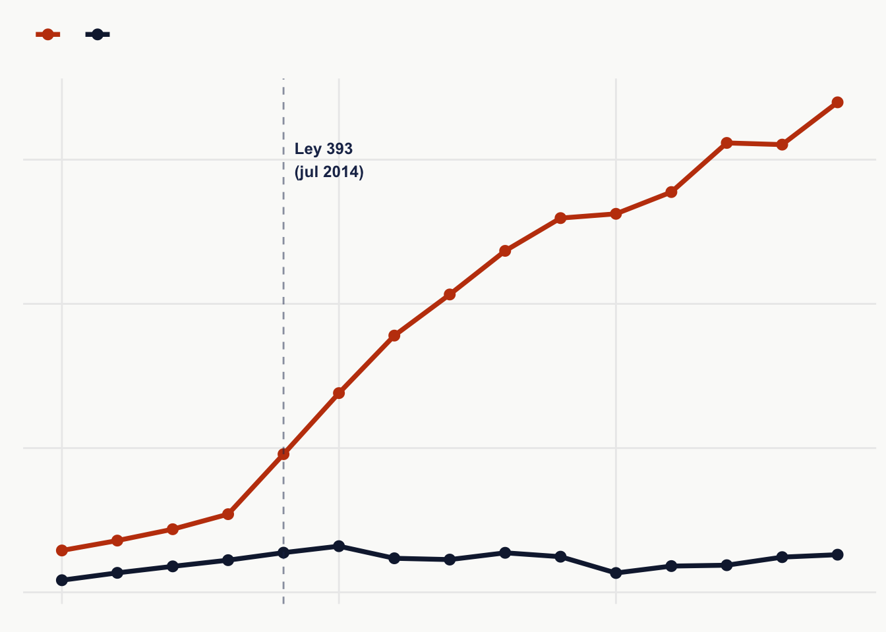
Hallazgo central (F05)
- La inversión pública cayó de 0,97 % del PIB en 2015 a 0,38 % en 2021.
- El crédito agropecuario subió de 5,1 % (2010) a 11,7 % (2024) del crédito total bancario (participación, invariante a deflación).
- En términos reales, la cartera se multiplicó por ×7,1 (USD 385 → 2 725 M constantes de 2015). El factor nominal de ×11,7 (USD 290 → 3 397 M corrientes) incorpora el efecto de la inflación.
Esta sustitución de instrumentos transforma la naturaleza del apoyo público: del gasto fiscal directo a la inducción regulatoria del crédito subsidiado (Ley 393/2014). Las regresiones panel del estudio incluyen un dummy estructural post_ley393 para capturar este quiebre.
Distribución subnacional del gasto
Validación cruzada VIPFE vs Jubileo
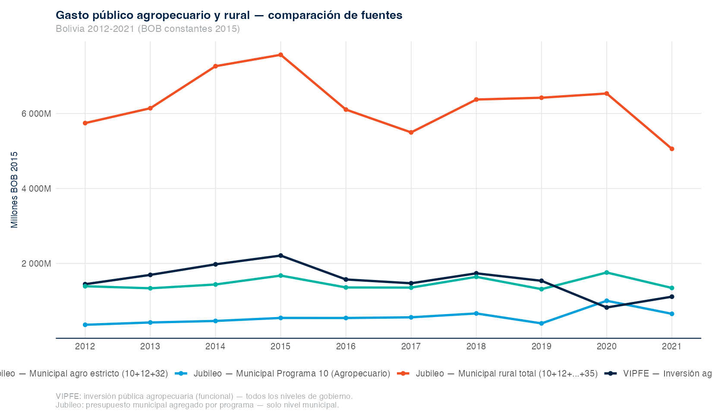
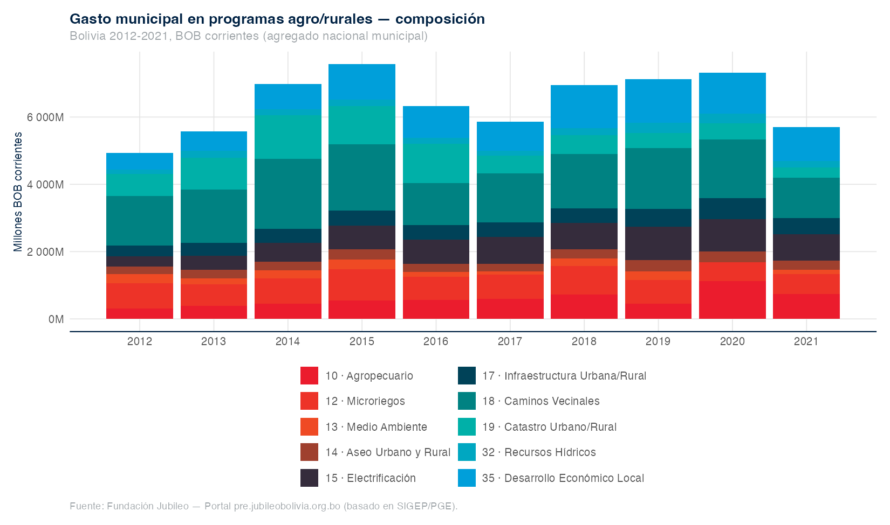
Las dos fuentes de gasto subnacional disponibles — el agregado VIPFE y la compilación municipal de Fundación Jubileo — convergen en el orden de magnitud y en los patrones temporales, lo que permite triangulación.
Programa 10 — gasto agropecuario municipal
El sistema presupuestario boliviano reserva el “Programa 10” para gasto agropecuario en presupuestos municipales. Su trayectoria es el indicador más fino del esfuerzo subnacional en el sector.
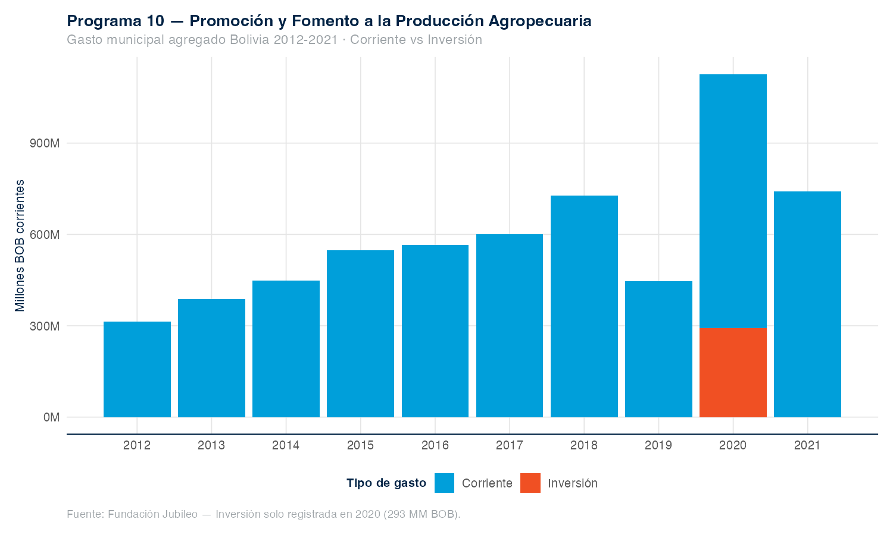
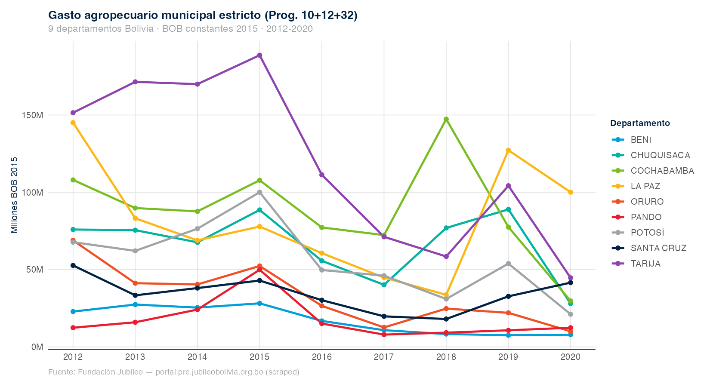
Mapas de distribución municipal
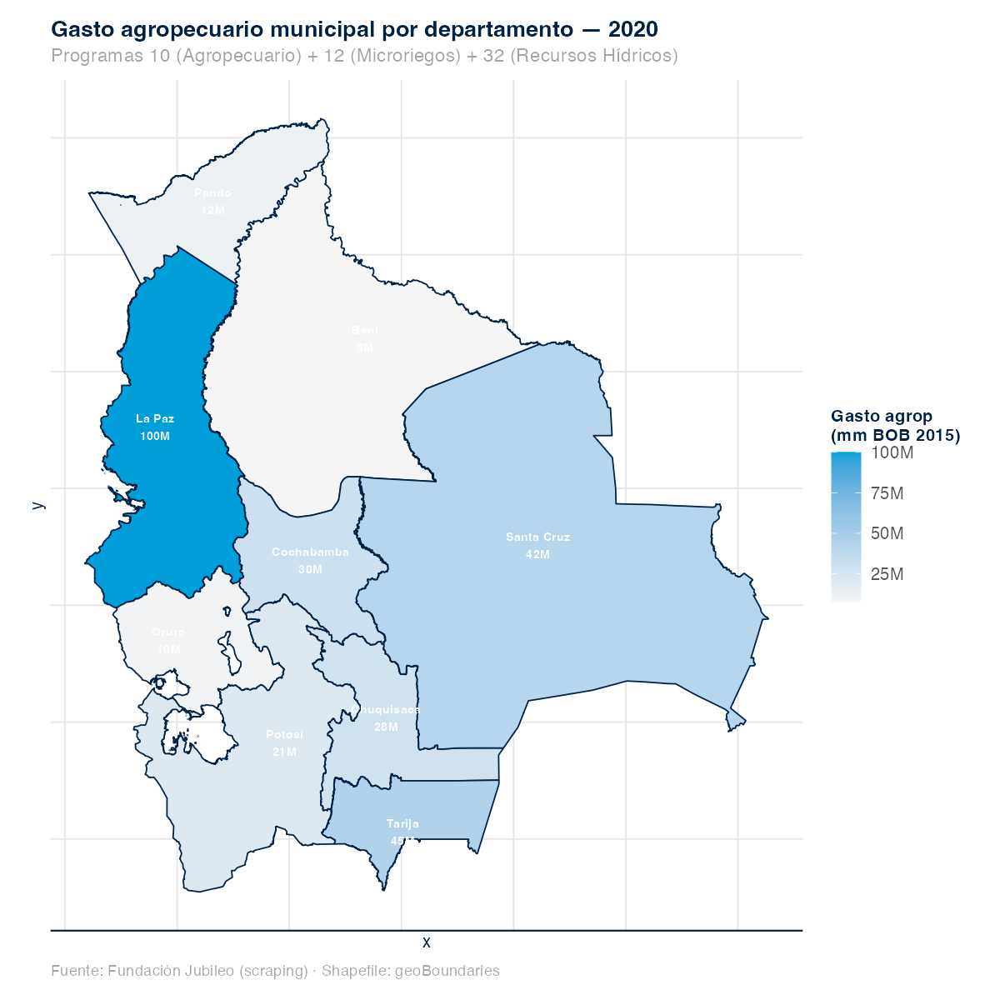
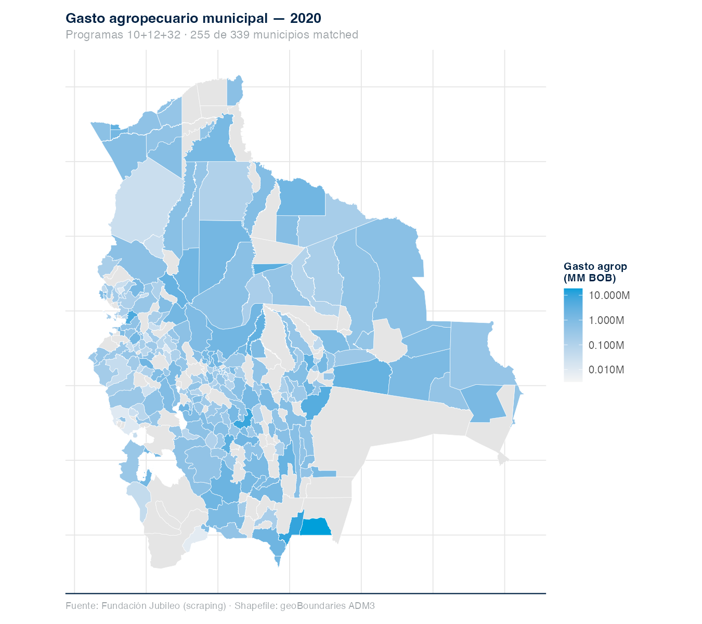
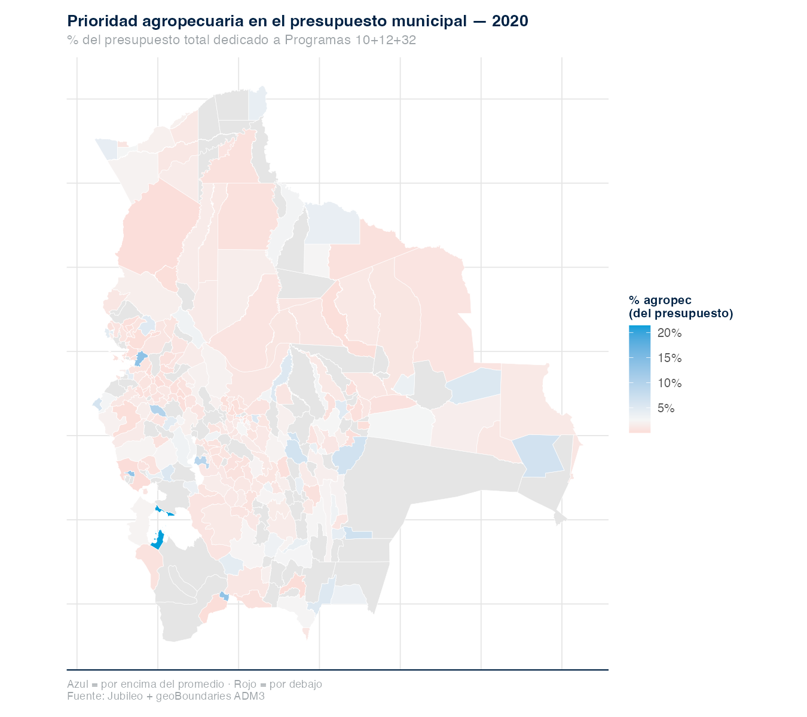
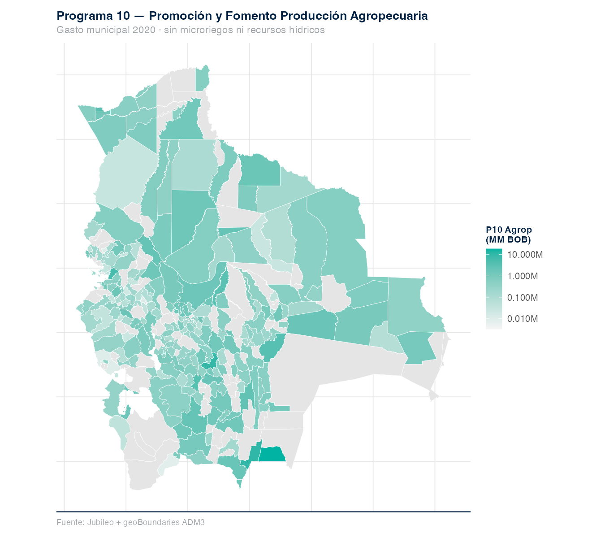
Concentración del gasto
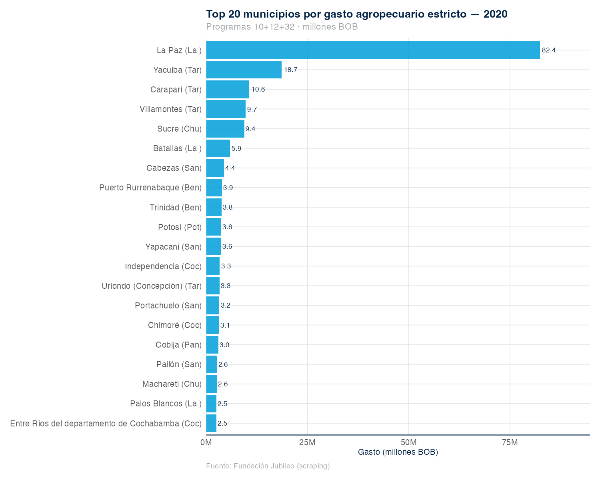
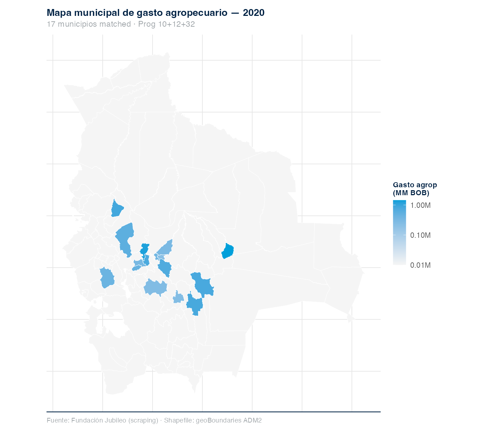
Patrones territoriales del gasto:
- Santa Cruz concentra el mayor gasto agropecuario absoluto pero el más bajo per cápita rural (paradoja de la concentración).
- Los municipios pequeños del altiplano y valles tienen el mayor gasto per cápita, reflejando la combinación de coparticipación tributaria + IDH.
- El gasto agropecuario municipal (Programa 10) representa entre 2 % y 8 % del presupuesto total municipal — espacio limitado para programas locales.
- La concentración de gasto absoluto es muy alta: el top 20 de municipios concentra cerca del 60 % del gasto agropecuario municipal nacional.
Síntesis
| Dimensión | Hallazgo | Implicación |
|---|---|---|
| Magnitud | Bolivia nunca alcanzó Maputo (máx 3,48 %) | Sector sub-financiado relativo al consenso regional |
| Tendencia | Inversión pico 2015, contracción post-2020 | Ciclo asociado a hidrocarburos y crisis fiscal |
| Composición (MAFAP) | Bienes públicos 64 % → 45 %; EMAPA 25 % → 42 % | Sustitución de bienes públicos por compras |
| Ejecución | MEFP 42–96 %; ejecución subnacional limitada (F07) | Capacidad heterogénea entre entidades |
| Estructural | Crédito ×7,1 real sustituye inversión post-Ley 393 | Cambio de instrumento: fiscal → crédito |
| Institucional | Riego fragmentado MDRyT-MMAyA | Coordinación intersectorial débil |
| Subnacional | Concentración Santa Cruz / dispersión altiplano | Diferenciar gasto por contexto regional |
El gasto agropecuario boliviano es persistentemente bajo en términos relativos, crecientemente dependiente de instrumentos crediticios post-2014, y fragmentado entre múltiples entidades. El siguiente capítulo examina si este gasto es eficiente y equitativo.